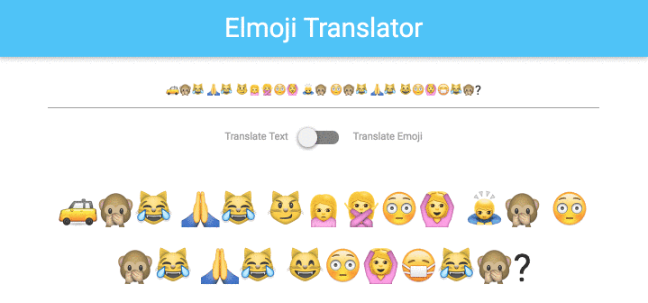
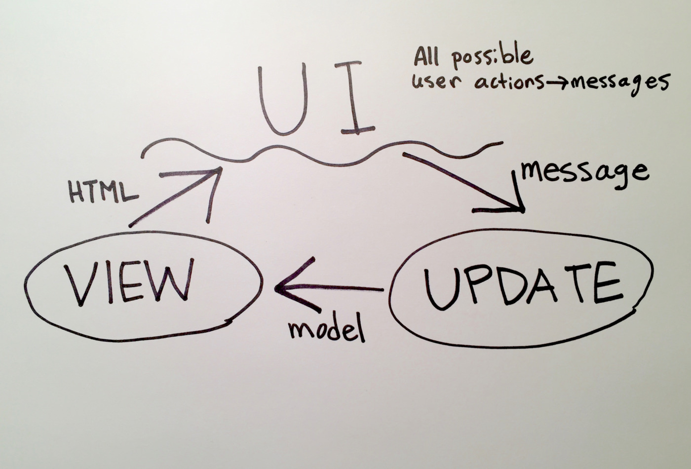
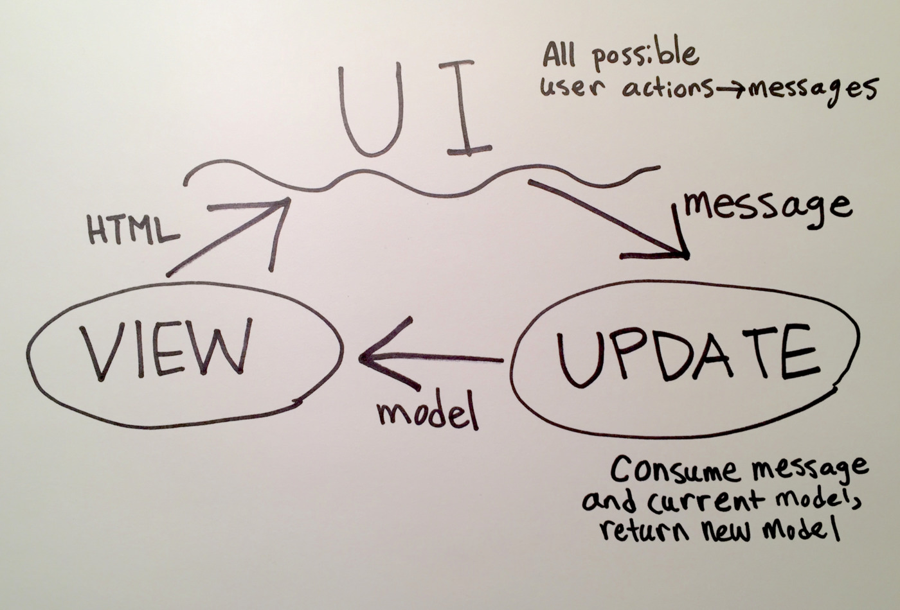

Our First Full Feature
While emojis are great, a one-way translator from text to emojis is not particularly useful. We need to be able translate in both directions, like this:

This is a complex feature — to implement it, we'll have to change every part of our application. Let's get started!
Note: Your code should currently look like the code in Part3.elm.
Goals
- Write Elm view code using HTML as a template.
- Add a new message for your application to consume.
- Extend a type alias and fix subsequent compiler errors.
- Use union types to store information in more literate ways.
Steps
Adding User Interfaces
First, let's start in our view function, where we'll map user actions in the UI to messages for our application to consume.

In our case, we want to build a switch that will allow users to toggle between "Translate Text" and "Translate Emoji." We can use the materialize.css lever component to do the job. Between the text input and paragraph tag that our view function produces, we want the following markup to appear:
<div class="switch center">
<label>
Translate Text
<input type="checkbox"></input>
<span class="lever"></span>
Translate Emoji
</label>
</div>
Take a shot at translating the above HTML to Elm and update the view function! Some tips if you get stuck:
- Most
Htmlfunctions take two arguments: a list of attributes (produced by theHtml.Attributesand theHtml.Eventsmodules), followed by a list of child elements. In this case, ourdivhas one child (thelabelelement), and thelabelelement has four children! - To render plain text elements, use
Html.text. It simply takes a string as its argument. - Compile early and often! The Elm compiler will nudge you in the right direction if your syntax is off.
If you get stuck, flag down a TA or instructor to help you through it!
Wiring in User Actions
Now that we have a working lever, we need to wire it up to our update function! Let's see what messages our update function can currently consume.
type Msg
= SetCurrentText String
This is a union type declaration. It defines a new type that we can use in our program, along with all its possible values. Specifically, the above code defines the Msg type, and declares that it has exactly one possible value – SetCurrentText String, which is triggered whenever the user inputs text into the translation box.
Even though union types and values look similar, they operate in different parts of our program. A union type is just another type, like String or List, which we can use in our type signatures. Values, on the other hand, can only be used in our implementation code. For instance:
We can use the case pet of syntax to Pattern Match to branch our code based on which value of the type we receive.
type Pet = Cat | Dog | Rabbit | Turtle
-- this defines the union type `Pet` with four possible values
makeSound : Pet -> String
-- union types, like `Pet`, can only be used in type signatures.
makeSound pet =
-- values like `Cat` and `Dog` can't be used in type signatures,
-- but they can be used inside functions.
if pet == Cat
"meow"
else if pet == Dog
"woof"
else
"..silence.."
You may be wondering what the String means after SetCurrentText. This is the syntax for declaring a tagged value, which we will learn more about in a future lesson. For now, know that a use of SetCurrentText must also include a string to be considered a valid message:
-- valid value for `Msg`
SetCurrentText "some awesome text"
-- invalid values for `Msg`
SetCurrentText 12345
SetCurrentText "string one" "string two"
Back to the task at hand: in order for the user to toggle between translation modes, we need a new message to our system. Let's add another possible value to our Msg union type declaration:
type Msg
= SetCurrentText String
| ToggleDirection
We'll make sure our lever triggers the new ToggleDirection Msg whenever the user clicks it!
If you try to compile now, you'll notice that the compiler realizes something is wrong:
-- MISSING PATTERNS --------------------------------------------- ././Part3.elm
This `case` does not have branches for all possibilities.
13|> case msg of
14|> SetCurrentText newText ->
15|> { model | currentText = newText }
You need to account for the following values:
ToggleDirection
Add a branch to cover this pattern!
Helpfully, the Elm compiler enforces case exhaustiveness – since our update function doesn't handle our new ToggleDirection value, the compiler realizes that triggering that Msg will break our program. Let's fix it by adding another clause to our case expression, this time matching on the pattern ToggleDirection.
ToggleDirection ->
-- currently, this does nothing!
model
Finally, let's make our view actually trigger our new Msg value. Add the following attribute to the lever's HTML in our view:
Html.Events.onClick ToggleDirection
Compile, and make sure nothing is broken.
Expanding the Model
When our update function receives a ToggleDirection message and the current model, it should return a new, changed model:

Eventually, our view function will reflect those changes to the user.
First things first — we need to find a way to describe the current direction in our Model. Let's take a look at our description of a model:
type alias Model =
{ currentText : String }
The code above declares that Model is a type alias for a specific record structure. A type alias works a lot like a union type declaration — it also produces a new type that we can use in our program. In this case, the Model type is just another name for "a record with a single field called currentText."
Type aliases are helpful for making type signatures simple and readable. For example, you can see that Model is used in the type signature for init:
init : Model
init =
{ currentText = "" }
Without this type alias, we would've had to write:
init : { currentText : String }
init =
{ currentText = "" }
Now back to business: we'll need to extend this type alias declaration, by adding another field to the record:
type alias Model =
{ currentText : String
, direction: -- ????
}
But wait, what is direction? In other languages, we might describe the current direction as a string, with possible values "emoji-to-text" and "text-to-emoji". We could also model it as a boolean value, perhaps renaming it translatingTextToEmoji.
In Elm, we have a more powerful tool at our disposal: union types! We can create a union type that enumerates all possible values for a direction, which keeps the code readable and fault tolerant.
Let's create a custom Direction type with two possible values:
type Direction
= TextToEmoji
| EmojiToText
Now, we can use that new type in our Model type alias:
type alias Model =
{ currentText : String
, direction : Direction
}
If you try to compile right now, you should get some errors: Our code wasn't written to handle a Model with a direction field! See if you can figure out what's wrong and fix it.
Now that Model can describe the current translation direction, we need to change the update function to correctly set the direction field when it consumes the ToggleDirection message.
Inside update, we know two things – (1) the current Msg we received and (2) the current state of the model, which includes its current direction. That's all the information we need – if the current model.direction is EmojiToText, then update should return a model with a direction value of TextToEmoji, and vice versa.
We can use case ___ of syntax to Pattern Match on the different values of the type Direction. This allows us to branch our code to handle the different conditions.
ToggleDirection ->
case model.direction of
TextToEmoji ->
-- return a model with a direction value of `EmojiToText`
EmojiToText ->
-- return a model with a direction value of `TextToEmoji`
Implement the toggle direction functionality in your update. Make sure your code compiles!
Displaying Model Values
Now to the final part of the feature: We need to reflect changes to the model in the UI!

In our case, we need to change our translation logic depending on the current model.direction. Let's take a look at our translateText function:
translateText model =
EmojiConverter.textToEmoji defaultKey model.currentText
Here's what we know:
- The
EmojiConverterexposes aemojiToTextfunction that we can use if the current direction isEmojiToText. - The
translateTextfunction also has access to the currentmodel, which stores the currentDirection. - In a similar manner to
updatefunction, we can use a case expression to choose whichEmojiConverterfunction to use.
That should be enough to get you started! If you are unsure, try to compile, and follow compiler errors until everything is fixed. If you get stuck, you can see the completed version of this feature in Part4.elm, or flag down a TA or instructor.
Congratulations, you've completed your first full feature in Elm!